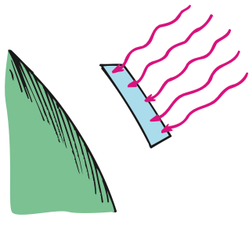

Direct Current and Alternating Current
Direct Current and Alternating Current
Electric current may be dc or ac. By dc, we mean direct current, which refers to the flowing of charges in one direction. A battery produces direct current in a circuit because each terminal of a battery always has the same sign: The positive terminal is always positive, and the negative terminal is always negative. Electrons move from the repelling negative terminal toward the attracting positive terminal, always moving through the circuit in the same direction. Even if the current occurs in unsteady pulses, so long as electrons move in one direction only, it is dc.
Alternating current (ac) acts as the name suggests. Electrons in the circuit are moved first in one direction and then in the opposite direction, alternating to and fro about relatively fixed positions. This is accomplished by alternating the polarity of voltage at the generator or other voltage source. Nearly all commercial ac circuits in North America involve voltages and currents that alternate back and forth at a frequency of 60 cycles per second. This is 60-hertz current. In some places, 25-hertz, 30-hertz, or 50-hertz current is used. Throughout the world, most residential and commercial circuits are ac because electric energy in the form of ac can easily be stepped up to high voltage for long-distance transmission with small heat losses, then stepped down to convenient voltages where the energy is consumed. Why this is so will be discussed in Chapter 25.

The voltage of ac in North America is normally 120 V. In the early days of electricity, higher voltages burned out the filaments of electric lightbulbs. Tradition has it that 110 V was first adopted as the standard because it made bulbs of the day glow as brightly as a gas lamp. So the hundreds of power plants built in the United States prior to 1900 produced electricity at 110 V (or 115 V or 120 V). By the time electricity became popular in Europe, engineers had figured out how to manufacture lightbulbs that would not burn out so fast at higher voltages. Power transmission is more efficient at higher voltages, so Europe adopted 220 volts as the standard. The United States continued with 110 V (today officially 120 V) because so much 110-V equipment was already installed. (Certain appliances, such as electric stoves and clothes dryers, presently use higher voltage.)
The primary use of electric current, whether dc or ac, is to transfer energy quietly, flexibly, and conveniently from one place to another.
Converting AC to DC
Household current is ac. The current in a battery-operated device, such as a laptop computer, is dc. You can operate these devices on ac instead of batteries with an ac–dc converter. In addition to a transformer to lower the voltage (see Chapter 25), the converter uses a diode, a tiny electronic device that acts as a one-way valve to allow electron flow in one direction only (Figure 23.10). Since alternating current changes its direction each half-cycle, current passes through a diode only half of each period. The output is a rough dc, and it is off half the time. To maintain continuous current while smoothing the bumps, a capacitor is used (Figure 23.11).
Figure 23.10 was omitted because no matching captured image was supplied.


Recall from Chapter 22 that a capacitor acts as a storage reservoir for charge. Just as it takes time to raise the water level in a reservoir when water is added, it takes time to add or remove electrons from the plates of a capacitor. A capacitor, therefore, produces a retarding effect on changes in the flow of charge. It opposes changes in voltage and smoothes the pulsed output.
Speed and Source of Electrons in a Circuit
Speed and Source of Electrons in a Circuit
When we flip the light switch on a wall and the circuit is completed, either ac or dc, the lamp appears to glow immediately. Current is established through the wires at nearly the speed of light. It is not the electrons that move at this speed.6 Although electrons inside metal at room temperature have an average speed of a few million kilometers per hour, they make no current because they are moving in all possible directions. There is no net flow in any preferred direction. But, when a battery or generator is connected, an electric field is established inside the conductor. The electrons continue their random motions while simultaneously being nudged by this field. It is the electric field that can travel through a circuit at nearly the speed of light. The conducting wire acts as a guide or “pipe” for electric field lines (Figure 23.13). In the space outside the wire, the electric field has a pattern determined by the location of the electric charges, including some charges that accumulate on the surface of the wire. Inside the wire, the electric field is directed along the wire.

If the voltage source is dc, like the battery shown in Figure 23.13, the electric field lines are maintained in one direction in the conductor. Conduction electrons are accelerated by the field in a direction parallel to the field lines. Before they gain appreciable speed, they “bump into” the anchored metallic ions in their paths and transfer some of their kinetic energy to them. This is why current-carrying wires become hot. These collisions interrupt the motion of the electrons, so the speed at which they migrate along a wire is extremely low. This net flow of electrons is the drift velocity. In a typical dc circuit—the electrical system of an automobile, for example—electrons have a drift velocity that averages about a hundredth of a centimeter per second. At this rate, it would take about 3 hours for an electron to travel through 1 meter of wire! Large currents are possible because of large numbers of flowing electrons. So, although an electrical signal travels at nearly the speed of light in a wire, the electrons that move in response to this signal actually travel slower than a snail’s pace.

In an ac circuit, the conduction electrons don’t progress along the wire at all. They oscillate rhythmically to and fro about relatively fixed positions. When you talk to your friend on a conventional land telephone, it is the pattern of oscillating motion that is transmitted across town at nearly the speed of light. The electrons already in the wires vibrate to the rhythm of the traveling pattern.
A common misconception regarding electric currents is that the current is propagated through the conducting wires by electrons bumping into one another—that an electrical pulse is transmitted in a manner similar to the way the pulse of a tipped domino is transferred along a row of closely spaced standing dominoes. This simply isn’t true. The domino idea is a good model for the transmission of sound, but not for the transmission of electric energy. Electrons that are free to move in a conductor are accelerated by the electric field impressed upon them, not because they bump into one another. True, they do bump into one another and other atoms, but this slows them down and offers resistance to their motion. Electrons throughout the entire closed path of a circuit all react simultaneously to the electric field.
Another common misconception about electricity is the source of electrons. In a hardware store, you can buy a water hose that is empty of water. But you can’t buy a piece of wire, an “electron pipe,” that is empty of electrons. The source of electrons in a circuit is the conducting circuit material itself. Some people think that the electrical outlets in the walls of their homes are a source of electrons. They incorrectly assume that electrons flow from the power utility through the power lines and into the wall outlets of their homes. This assumption is false. The outlets in homes are ac. Electrons make no net migration through a wire in an ac circuit.
When you plug a lamp into an outlet, energy flows from the outlet into the lamp, not electrons. Energy is carried by the pulsating electric field and causes vibratory motion of the electrons that already exist in the lamp filament. If a voltage of 120 V is impressed on a lamp, then an average of 120 J of energy is dissipated by each coulomb of charge that is made to vibrate. Most of this electric energy appears as heat, while some transforms to light. Power utilities do not sell electrons. They sell energy. You supply the electrons.
So, when you are jolted by an electric shock, the electrons that make up the current in your body originate in your body. Electrons do not emerge from the wire and pass through your body and into the ground; energy does. The energy simply causes free electrons already existing in your body to vibrate in unison. Small vibrations tingle; large vibrations can be fatal.
Electric Power
Electric Power
Unless it is in a superconductor, a charge moving in a circuit expends energy. This may result in heating the circuit or in turning a motor. The rate at which electric energy is converted into another form, such as mechanical energy, heat, or light, is called electric power. Electric power is equal to the product of current and voltage:7
Power = current × voltage
If the voltage is expressed in volts and the current in amperes, then the power is expressed in watts. So, in units,
Watts = amperes × volts
An incandescent bulb rated at 60 W draws a current of 0.5 A (60 W = 0.5 A × 120 V). A 100-W bulb draws about 0.8 A. Interestingly, a 26-W compact fluorescent lamp (CFL) provides about the same amount of light as a 100-W incandescent bulb—only one-quarter of the power for the same light!8
The relationship between energy and power is a practical matter. From the definition power = energy per unit time, it follows that energy = power × time. So an energy unit can be a power unit multiplied by a time unit, such as kilowatt-hours (kWh). One kilowatt-hour is the amount of energy transferred in 1 hour at the rate of 1 kW. Therefore in a locality in which electric energy costs 15 cents per kWh, a 1000-W iron can operate for 1 hour at a cost of 15 cents. A refrigerator, typically rated at around 500 W, costs less for an hour but much more over the course of a month.
Solar Power
Solar Power
If you step from the shade into the sunshine, you’re noticeably warmed. The warmth you feel isn’t so much because the Sun is hot, because its surface temperature of 6000°C is no hotter than the flames of some welding torches. We are warmed principally because the Sun is so big.6 As a result, it emits enormous amounts of energy, less than one part in a billion of which reaches Earth. Nonetheless, the amount of radiant energy received each second over each square meter at right angles to the Sun’s rays at the top of the atmosphere is 1400 joules (1.4 kJ). This input of energy is called the solar constant. It is equivalent, in power units, to 1.4 kilowatts per square meter (1.4 kW/m2). Solar power is the rate at which solar energy is received from the Sun. The amount of solar power that reaches the ground is attenuated by the atmosphere and reduced by nonperpendicular elevation angles of the Sun. Also, of course, it ceases at night. The solar power received in the United States, averaged over day and night, summer and winter, is about 13% of the solar constant (0.18 kW/m2). This amount of power, illuminating the roof of a typical American house, is twice the power needed to comfortably heat and cool the house year-round. More and more homes are capturing solar energy for space heating and water heating. Also gaining in popularity are photovoltaic shingles that blend almost seamlessly with roofing materials.

Practicing Physics
Does the distance from the Sun, or the angle of the Sun’s rays on Earth, account for frigid polar regions and tropical equatorial regions? You can see the answer for yourself if you hold a flashlight above a surface and note its brightness. When the light strikes perpendicularly, light energy is concentrated, but when the surface is tipped, keeping at the same distance, incident light is more spread out. Can you see that the same energy over a larger area is akin to the low temperatures of the Arctic and Antarctic regions of Earth?
The sketch is of Earth with parallel rays of light coming from the Sun. Count the number of rays that strike region A and equal-area region B. Where is the energy per unit area less? How does this relate to climate?


The cover of this book shows photovoltaic systems that convert sunlight directly to electricity. Photovoltaic cells can be designed for power needs ranging from milliwatts to megawatts, powering a calculator or a generator in a power plant. They also can be located in remote areas that are not readily accessible to utility grid lines. Solar-energy collecting and concentration systems, whether arrays of mirrors or photovoltaic cells, are becoming competitive in cost with electric power generated by conventional power sources.
Figure 16.26 was omitted because no matching captured image was supplied.
Summary of Terms
Solar constant 1400 J/m2 received from the Sun each second at the top of Earth’s atmosphere on an area perpendicular to the Sun’s rays; expressed in terms of power, 1.4 kW/m2.
Solar power Energy per unit time received from the Sun.
Reading Check Question
16.7 Solar Power
29. How much radiant energy from the Sun, on average, reaches each square meter at the top of Earth’s atmosphere each second?
Textbook Sections: 23.5–23.7, 16.7
Learning Target: Students will explain electric power and electrical energy use in devices, homes, and energy systems.
- I can define electric power as the rate at which electrical energy is transferred.
- I can calculate power using voltage and current.
- I can calculate electrical energy use from power and time.
- I can compare energy use of household devices.
- I can explain why high-power devices transfer energy faster.
- I can evaluate claims about efficient lighting, solar power, and electrical energy use.